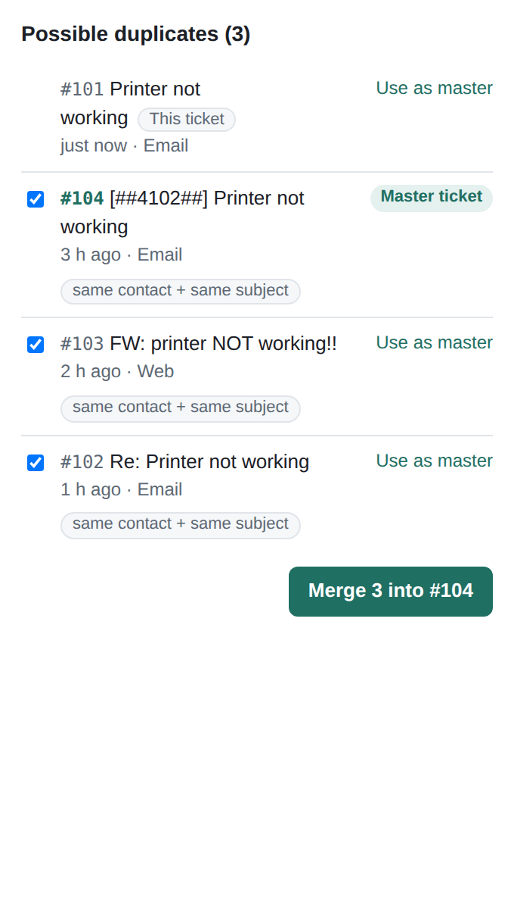
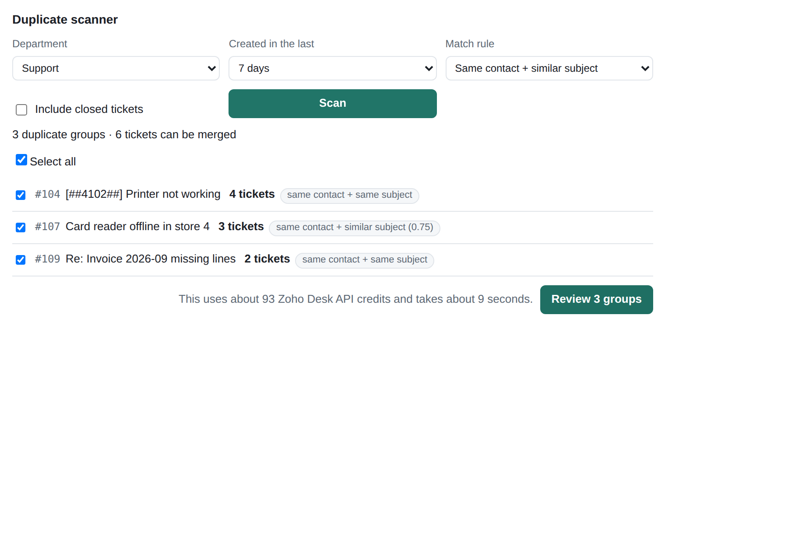

Find duplicate tickets and merge them in batches — with a preview first.
Duplicate tickets split conversations, inflate your ticket counts and waste agent time. Zoho Desk merges up to five tickets at a time, and finding the duplicates is still manual. This extension does the finding for you.
Status: private beta. The extension is not listed on Zoho Marketplace yet. If your team deals with duplicate tickets, email atesen.media@protonmail.com to try it free during the beta.
What it does
- Duplicates panel on every ticketOpen a ticket and see other open tickets from the same contact, or with a similar subject, in the same department.
- Department scanFind every duplicate group from the last 7, 14 or 30 days and merge the groups you choose in one run.
- Preview, then an audit noteNothing changes until you confirm. A private note on the master ticket records what was merged, by whom and why.
- No code, no serverWorks on Standard and Professional without custom functions. The extension calls the Zoho Desk API from your browser; your ticket data never leaves Zoho.


How matching works
You choose one rule per scan:
- Same contact + similar subject (default) — the safest rule for most teams.
- Same contact — any open ticket from the same requester within the window.
- Same subject — identical subject after removing "Re:", "Fwd:" and ticket numbers. Very short or generic subjects ("Help", "Question") are skipped.
Only tickets in the same department are grouped, because Zoho Desk cannot merge across departments. The oldest ticket becomes the master unless you pick another one.
Isn't this what Email Deduplication does?
No. Zoho's Email Deduplication stops one email sent to two of your department's addresses from opening two tickets. It does not find duplicates that already exist, and it does not cover the same customer writing twice, a web form plus an email, chat, or an outage flood.
Pricing
Planned price after the beta: $19 per Zoho Desk organization per month, or $190 per year, billed through Zoho Marketplace with a free trial. Beta users will be told the final price before the beta ends.
Good to know
- Zoho Desk merges are permanent. Merged tickets go to the Recycle Bin, where Zoho keeps them for a limited time.
- Each merge uses Zoho Desk API credits (30 per merge call). The scan shows an estimate before you start.
- You need permission to merge tickets in Zoho Desk. Admins can turn off Allow merging in the extension settings; the panel and scan keep working.